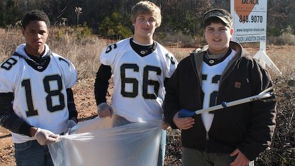
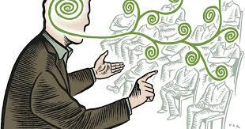
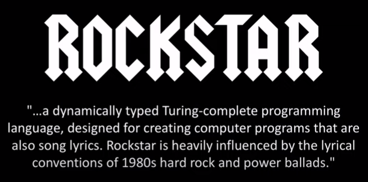

Events
We here at the Center for Applied Research in Information Technology are known to host numerous events throughout the year to help bring advisors, faculty, and administrative personel with members of the community. We highly encourage anyone interested in meeting our staff to drop by and say hello. You may even learn a thing or two.
|
Helping Students Grow Community Service Drive  |
Our annual charity fundraiser is with the Children's Fund of Neo America, where students interested in art and technology come together to help out their communities. Our staff participates in cleaning up beaches, restoring natural parks, and delivering heart warming lessons to the growing minds of our future leaders. If anyone is interested in participating, we know the students of today would appreciate a little giving back from their forerunners. |
|
Technological Innovations seminars  |
The first week of every month, we host free seminars for students and community members alike to help them understand the cutting edge of the technological landscape. Former speakers have included Patrick Rothfuss, PhD, Linus Torvalds' cousin, and Bill Watergate. This month, our lesson will be on personal data and the encroaching future of monitized monitoring. We hope to see you there! |
|
The Science of Music  |
This month, we have a special guest panel hosted by Dylan Beattie, the creator of Rockstar. Rockstar is a turing complete programming language derived from 80's hair metal. If you're interested in programming or rock and roll, you can't miss this once in a lifetime opportunity to see FizzBuzz in a completely new light! For those unable to make it to the panel, a previous panel hosted by Dylan Beattie can be found at the following link: Youtube External Link . |